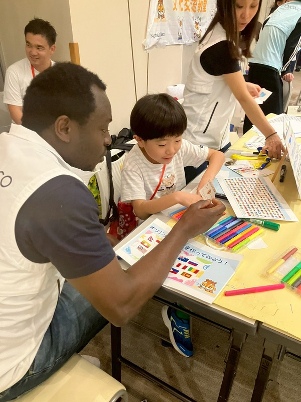
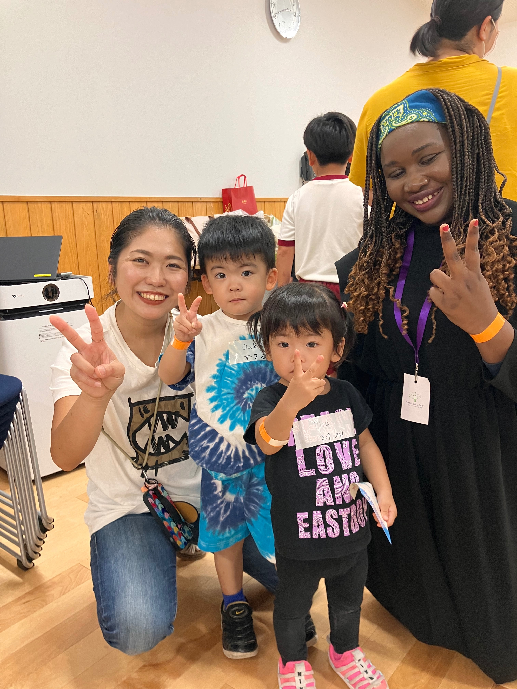

「子どもに国際感覚を身につけさせたい」――そう思うと、英語教室に通わせるべき？ 海外旅行に連れて行くべき？ 早いうちからインターナショナルスクールを検討すべき？と、いろいろ考えてしまいますよね。
でも実は、特別なことをしなくても、家庭の中で国際感覚を育てていくことはできるんです。
この記事では、「国際感覚」の本当の意味を整理したうえで、保護者の方が知っておきたい考え方や、子どもの年齢に応じた育て方のヒントをお伝えしていきます。
1. 「国際感覚」とは何か――よくある誤解
「国際感覚がある人」と聞いて、どんな人を思い浮かべますか？ 英語がペラペラな人、海外経験が豊富な人、外国人の友人がたくさんいる人……そんなイメージ、ありますよね。もちろんそういった側面もありますが、それだけが「国際感覚」の全てではありません。
国際感覚を構成する要素を整理すると、大きく分けて3つの軸があります。
| 軸 | 内容 | 勘違いされやすいポイント |
|---|---|---|
| 語学力 | 外国語でコミュニケーションできる力 | 語学力だけでは国際感覚とは言えない |
| 知識・教養 | 世界の地理・歴史・文化・社会問題への理解 | 知識があっても共感や好奇心がなければ活きない |
| 姿勢・マインドセット | 違いを面白いと思える好奇心、相手の立場に立てる共感力、異なる価値観を尊重する態度 | 最も根本的であり、最も育てにくい |
多くの親御さんが力を入れがちな「語学力」は、実は3つの中で最も後から身につけやすい要素です。一方、「姿勢・マインドセット」は幼少期の体験によって少しずつ育っていくもので、大人になってから変えることが難しい部分です。
だからこそ、「国際感覚を育てる」とは、英語を教えることより先に、この「姿勢・マインドセット」の土台を作ることだと私たちは考えています。
2. 国際感覚の土台となる3つの力
では、その土台って具体的に何でしょうか？
① 異文化への好奇心――「違い」を面白がれる感性
子どもって、「なんで？」「どうして？」が大好きですよね。「なんで外国の人はお箸を使わないの？」――そんな疑問、聞いたことありませんか？ 子どもの素朴な疑問は、文化の違いへの好奇心のサインです。
この「違うから面白い」という感覚が育っている子どもは、将来どんな国の人と出会っても、まず相手に興味を持つことができます。そして興味があれば、言葉の壁も乗り越えようとする気力が生まれます。
② 共感力――相手の気持ちを想像できる力
文化の違いを理解するということは、「なぜその人はそう考えるんだろう？」を想像することです。これは、異文化理解に限らず、あらゆる人間関係の基盤となる「共感力」です。
共感力は、多様な人との体験的な関わりの中で育まれます。本や映像で「知る」だけでなく、実際に「出会う」体験が重要なのは、ここに理由があります。

③ 自己肯定感――自分を大切にしながら他者と関われる力
意外に思われるかもしれませんが、自己肯定感もとても大切なんです。「自分はここにいていい」「自分の考えは価値がある」と思える子は、どんな場面でも自分の意見を伝えられます。
逆に、自信がないと、外国語で話す場面で「間違えたらどうしよう」という恐れが先に立ち、せっかくのコミュニケーションの機会を逃してしまうこともあります。子どもの自己肯定感を育てることは、国際感覚を育てることとも深くつながっているのです。
「国際感覚」を育てるために必要なものって？
✗ 高額な英語教室 → 必ずしも必須ではありません
✗ 海外旅行の経験 → あれば良いですが、なくても育てられます
✗ 国際感覚のある保護者 → 親が詳しくなくても問題ありません
◎ 必要なのは：異文化と直接ふれあう体験の機会＋好奇心を受け止める環境
日本にいても、工夫次第で「本物の体験」を作ることは十分に可能ですよ！
3. 年齢ごとの関わり方、どうすればいい？
国際感覚は、子どもの年齢によって育て方のアプローチが異なります。
| 年齢 | この時期の特徴 | おすすめのアプローチ |
|---|---|---|
| 未就学（〜6歳） | 感覚・感情で世界を受け取る時期。「楽しい・好き」という体験が記憶に残りやすい | 絵本・音楽・食べ物など感覚的な異文化体験。外国人の大人との楽しい時間。 |
| 小学校低学年（7〜9歳） | 好奇心が爆発する時期。「なぜ？」「どうして？」への向き合い方が大切 | 世界の文化クイズ・ゲーム。地球儀や世界地図に触れる機会。外国人との交流体験。 |
| 小学校高学年（10〜12歳） | 論理的思考が育ち、「違い」を比べ・考えられるようになる | SDGsや世界の社会問題への関心。外国人とのより深い対話。英語学習の動機づけ。 |
どの年齢でも共通して大切なのは、「体験→疑問→共有」のサイクルを作ることです。体験させて終わりではなく、「どう思った？」「何が面白かった？」と親子で話す時間を持つことで、体験がしっかり学びに変わります。
4. 親自身が「国際感覚がない」と感じていても大丈夫？
「私自身が英語も話せないし、海外に行ったこともないから、子どもに教えられることがない」というお声をよくいただきます。でも、安心してください。親が「先生」になる必要はないんです。
それよりも大事なのは、子どもと一緒に「知らないことを楽しむ」「違うことを面白がる」――その姿勢を見せることが、最も効果的な国際感覚の教育につながります。「すごいね、どうしてだろうね、調べてみようか！」そんな会話があるだけで、子どもの好奇心はどんどん広がっていきますよ！
加えて、外国人と直接ふれあう機会をつくってあげることも、親にできる大切な役割のひとつです。地域の国際交流イベントや、外国人が関わる子ども向けプログラムへの参加は、親の語学力とは関係なく始められます。

ナタデココでは、「好奇心・共感力・自己肯定感」の3つの力を、外国人と直接関わる体験型のプログラムの中で育てることを意識しています。実際にナタデココのプログラムに参加されたご家庭からは、こんなお声もいただいています。
こうした変化は、「教える」だけではなかなか生まれないものです。実際に人と出会って、感じて、心が動く――そんな体験があるからこそ、子どもは大きく変わっていくのだと思います。
ナタデココのプログラム概要
| 対象年齢 | 未就学児（年中・年長）〜小学生 |
| 実施形式 | 対面イベント（週末・単発ワークショップ）／外国人スタッフと交流する体験型プログラム／地域施設や教育施設・イベント会場での開催 |
| 特徴 | 英語力に関係なく参加できる／遊びや体験を通して楽しく異文化に触れられる／外国人と自然に関わる中で好奇心・共感力・自己肯定感を育てる |
詳細・お問い合わせはこちらからどうぞ。
5. まとめ――「国際感覚」は体験で育つ
国際感覚は、英語力や海外経験の量ではなく、「違いを面白がれる好奇心」「相手を想像できる共感力」「自分を大切にしながら他者と関われる自己肯定感」――この3つが重要です。
これらは、特別な教材や高額なプログラムだけではなく、日常の体験や一緒に振り返る親子の対話、そして親がちょっとした機会を作ってあげることで育んでいくことができます。
まずは気軽な体験から、お子さんの「世界っておもしろい！」という気持ちを育ててみませんか？

この記事のまとめ
- 国際感覚は「語学力」だけでなく、「姿勢・マインドセット」の土台が最も重要
- 好奇心・共感力・自己肯定感の3つが国際感覚の核となる力
- 年齢に応じたアプローチと「体験→疑問→共有」のサイクルが効果的
- 親が「先生」になる必要はなく、一緒に楽しむ姿勢と体験の機会づくりが大切